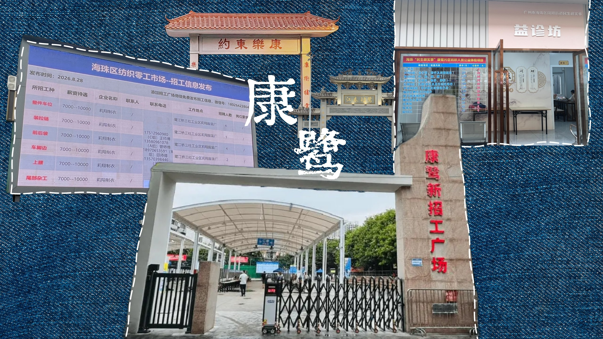

Digital Humanities · Field Archive 2023–2026
广州市海珠区的康乐村与鹭江村，合称「康鹭片区」。
约 1.1 平方公里的土地上，密布着制衣厂、档口与辅料作坊，也容纳着来自湖北等地的大量务工者——
这里既是全国快时尚供应链中最具弹性的一环，也是广州中心城区投资额最大的旧改项目。
About Kanglu
一平方公里的城中村，如何长成全国快时尚供应链的心脏。
康鹭片区，由康乐村和鹭江村两个城中村组成，坐落于广州市海珠区中部，北至新港西路、毗邻中山大学，南临新滘西路，东至广州大道南，西至瑞康路。广州城市中轴线从这片区域穿越而过。
这里是全国闻名的「制衣村」和「湖北村」。约 1.1 平方公里的土地上，聚集了超过 5200 家制衣厂、仓储企业，常住人口约 13 万人，人口密度高达 11.96 万人/平方公里。其中 95% 以上是外来人口，大部分来自湖北。
这里也是广州中心城区旧改「巨无霸」。2020 年，康乐村、鹭江村旧改项目以 346.67 亿元的投资总额，成为广州中心城区公开招标以来总投资额最大的旧改项目。2023 年底，改造按下加速键；2026 年 3 月，首期复建地块正式开工，预计 2030 年全面建成。
这里即将彻底改变。
By the Numbers
密度、速度与体量——六个数字，看这片一平方公里。
口径说明：上表与正文的数字出自不同统计范围，本站并列呈现、不作换算。 正文中的「超 5200 家制衣厂、仓储企业」「约 13 万常住人口」「密度 11.96 万人/平方公里」出自政府通报与媒体报道； 表格中的「近 2 万家制衣厂与档口」为含无照作坊、辅料、印花、绣花等上下游的较大口径，「10 万+ 常住人口」为常住口径。 参考：南方都市报《康鹭「破局」：广州城央最贵旧改项目迎「首建」》（2024-07-24）， 该报道载康鹭片区改造范围 110.27 公顷、人口密度 11.96 万人/平方公里、村内小制衣厂与小作坊商户近 1.6 万户。完整来源见参考文献。
Navigate the Archive
从历史脉络到空间结构，从产业逻辑到个体命运，我们把调研成果拆成可以逐层翻阅的档案。
Why It Matters
康鹭不是一个可以被简单归纳的地方。它既是全球最大面辅料市场的下游车间， 也是十几万外来务工者的栖身之所；它用「小单快反」把服装生产的速度推向极致， 也用握手楼、铁皮房和一线天，把城市化的代价压缩在一平方公里之内。
如果说整个产业生态是大池塘，小微工厂和家庭作坊就是数万个小蝌蚪。 小蝌蚪既离不开大池塘，也维持着它的生命力。 —— 广东省湖北商会服饰时尚产业协会会长 梁富斌
当改造的推土机驶入，最先消失的往往是那些从未被写下的东西： 一句招工的行话、一本记着「还差多少钱买厂」的笔记本、凌晨三点踩缝纫机的节奏。 数字人文能做的，是把这些碎片结构化、可检索、可回访。
Methodology
系统梳理 2012 年以来的学术调研、媒体报道与政府公开文件，将散落的事实抽取为「时间—空间—人物」三类实体，建立可交叉检索的底层数据集。
将报道中的直接引语作为「口述证据」单独抽取，与人物身份、年限、厂房规模等字段绑定，形成可比对的人物档案卡片。
放弃追求测绘精度，转而绘制「关系地图」：标注的不是坐标，而是供应、用工、出货、治理四条关系网络如何在空间上折叠。
以编年、词条、产业链流程、人物卡片四种视图呈现同一份数据，让不同背景的读者都能找到进入的角度。